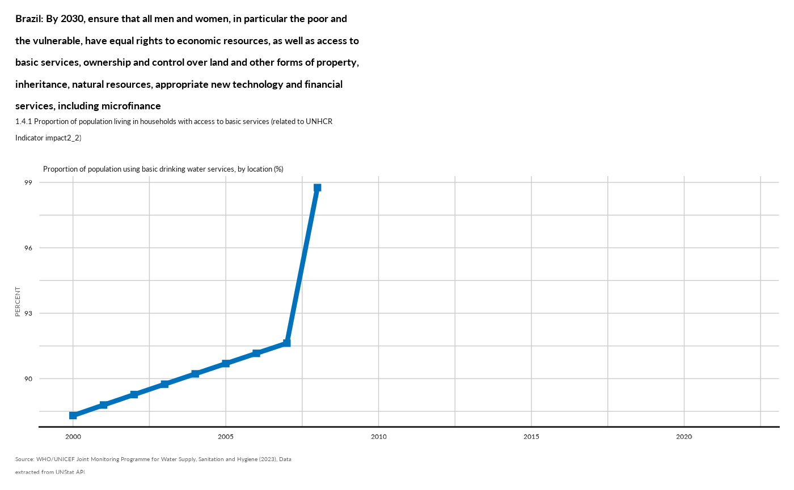

Indicator functions are designed to work based on data stored as a list - which is the default structure for a complex hierarchical survey dataset with nested tables
The default export format from kobotoolbox includes variables names generated as a concatenation of groups and names.
The indicators calculation are based on specific patterns to be identified within the variable names. This allow to handle cases where variables and questions would have been shifted within the sequence of the questionnaire and through different questions groups.
The indicator functions also check that the data content is the one expected. A check log is written to keep track of all issues
Data Wrangling
Each indicator calculation is based on predefined frame, variable name and variable value.
Therefore each indicator function is organised in 3 steps:
Check if the standard frame/variable/modalities are already present in the dataset (organised as a list..)
fct_check_mapIf not apply the mapping supplied as argument within the function
fct_re_mapApply the calculation - either to append the new variable to the existing data or to output just the final vector with results.
fct_var_mapping
form <- system.file("RMSCAPI.xlsx", package = "IndicatorCalc")
#fct_var_mapping(xlsformpath = form)fct_check_map
mapper = list(
hierarchy = "main",
variablemap = data.frame(
label = c("Does this household use anything for lighting?",
"What source of electricity is used most of the time in this household?"),
variable = c("LIGHT01",
"LIGHT03"),
mappattern = c("LIGHT01",
"LIGHT03") ),
modalitymap = data.frame(
variable = c( "LIGHT01",
"LIGHT03", "LIGHT03", "LIGHT03"),
label = c( "yes",
"No electricity in household", "Other, specify", "Don't know"),
standard = c( "1",
"1", "96", "98"),
map = c("1",
"1", "96", "98")
)
)
## Correct format
data <- list(main = data.frame(
LIGHT01 = c("1", "1", "0", "1", "1", "0", "1", "1", "1"),
LIGHT03 = c("1", "96", "98", "1", "96", "98", "0", "96", "98"))
)
fct_check_map(datalist = data, mapper = mapper )
#> LIGHT01 is in the dataset and has at least one of the expected modality for calculation
#> LIGHT03 is in the dataset and has at least one of the expected modality for calculation
## One variable is not correctly
data <- list(main = data.frame(
LIGHT01 = c("1", "1", "0", "1", "1", "0", "1", "1", "1"),
LIGH03 = c("1", "96", "98", "1", "96", "98", "0", "96", "98"))
)
fct_check_map(datalist = data, mapper = mapper )
#> LIGHT01 is in the dataset and has at least one of the expected modality for calculation
#> ℹ LIGHT03 standard variable was not found in the dataset.
## The first variable does not include a single 1...
data <- list(main = data.frame(
LIGHT01 = c("0", "0", "0", "0", "0", "0", "0", "0", "0"),
LIGHT03 = c("1", "96", "98", "1", "96", "98", "0", "96", "98"))
)
fct_check_map(datalist = data, mapper = mapper )
#> ℹ LIGHT01 standard variable in the dataset misses at least one response among : 1
#> LIGHT03 is in the dataset and has at least one of the expected modality for calculationfct_get_all_variable_names
datalist <- kobocruncher::kobo_data( system.file("demo_data.xlsx", #"test.xlsx",
package = "IndicatorCalc"))
#> Warning: Unknown or uninitialised column: `_index`.
#> Warning: Unknown or uninitialised column: `_parent_index`.
#> Unknown or uninitialised column: `_parent_index`.
#> Unknown or uninitialised column: `_parent_index`.
varname <- fct_get_all_variable_names(datalist = datalist)
head(varname, 10)
#> # A tibble: 10 × 2
#> df value
#> <chr> <chr>
#> 1 main index
#> 2 main start
#> 3 main end
#> 4 main start_time_1
#> 5 main intro.intro
#> 6 main intro.interviewdate
#> 7 main intro.Bureau
#> 8 main intro.Country
#> 9 main intro.countryname
#> 10 main intro.geopointfct_re_map
mapper = list(
hierarchy = "main",
variablemap = data.frame(
label = c("Does this household use anything for lighting?",
"What source of electricity is used most of the time in this household?"),
variable = c("LIGHT01",
"LIGHT03"),
mappattern = c("LIGHT01",
"LIGHT03") ),
modalitymap = data.frame(
variable = c( "LIGHT01",
"LIGHT03", "LIGHT03", "LIGHT03"),
label = c( "yes",
"No electricity in household", "Other, specify", "Don't know"),
standard = c( "1",
"1", "96", "98"),
map = c("yes",
"Noelec", "Other", "Dontknow")
)
)
## One variable is not correctly
datalist <- list(mainhousehold = data.frame(
group.LIGHT01 = c("yes", "yes", "no", "yes", "yes",
"no", "yes", "yes", "yes"),
group.LIGHT03 = c("Noelec", "Other", "Dontknow", "Noelec", "Other",
"Dontknow", "Nuclear", "Other", "Dontknow"))
)
datalist <- fct_re_map(datalist = datalist, mapper = mapper )
#> Mapped levels for LIGHT01 are now: 1, no
#> Mapped levels for LIGHT03 are now: 1, 96, 98, Nuclear
fct_check_map(datalist = datalist, mapper = mapper )
#> LIGHT01 is in the dataset and has at least one of the expected modality for calculation
#> LIGHT03 is in the dataset and has at least one of the expected modality for calculationfct_plot_indic_donut
test <- data.frame(
shelter = rbinom(20, 1, 0.5)) |>
dplyr::mutate( shelter =
labelled::labelled( shelter,
labels = c( "Yes" = 1, "No" = 0),
label = "Access to adequate shelter"))
fct_plot_indic_donut(indicator = test$shelter,
subtitle_chart = NULL,
caption_chart = NULL,
ordered_threhold = NULL,
iconunicode = "e54f") 
Generating data from a specific form definition
One key function is to generate a dummy dataset based on a specific form structure
To demonstrate the package we will use the standard questionnaire and then apply each indicator function to demonstrate them.
We can then also re-use the function to create dummy data based on any form and then apply each indicator function to actually verify which indicators can be created based on the form content.
fct_var_dummy
## let's initiate a dataframe with an index of n r records
n <- 384
frame <- dplyr::tibble(
index = paste0( "ID-",
purrr::as_vector(
purrr::map(n, sample(LETTERS, 4)) |>
purrr::map(paste0, collapse = "")),
"-",
formatC(1:n, width = nchar(n) + 1, flag = "0")
))
## test inject select_one
frame <- fct_var_dummy(
frame = frame,
name = "testselect_one",
type = "select_one",
list_opt = c("alpha", "beta", "delta"),
constraint = NULL
)
## test inject select_multiple in main
frame <- fct_var_dummy(
frame = frame,
name = "testselect_multiple",
type = "select_multiple",
list_opt = c("alpha", "beta", "delta"),
constraint = NULL
)
## test inject text
frame <- fct_var_dummy(
frame = frame,
name = "testtext",
type = "text",
list_opt = NULL,
constraint = NULL
)
## test inject numeric
frame <- fct_var_dummy(
frame = frame,
name = "testnumeric",
type = "numeric",
list_opt = NULL,
constraint = NULL
)
## test inject date
frame <- fct_var_dummy(
frame = frame,
name = "testdate",
type = "date",
list_opt = NULL,
constraint = NULL
)
## Preview out out
knitr::kable(head(frame, 5))| index | testselect_one | testselect_multiple_alpha | testselect_multiple_beta | testselect_multiple_delta | testtext | testnumeric | testdate |
|---|---|---|---|---|---|---|---|
| ID–0001 | delta | 0 | 1 | 0 | FreeText_-0001 | 90 | 2022-08-23 00:08:04 |
| ID–0002 | alpha | 0 | 0 | 0 | FreeText_-0002 | 44 | 2023-03-23 14:32:58 |
| ID–0003 | beta | 0 | 1 | 0 | FreeText_-0003 | 68 | 2023-01-17 07:58:29 |
| ID–0004 | beta | 0 | 0 | 1 | FreeText_-0004 | 89 | 2020-02-06 23:23:49 |
| ID–0005 | beta | 1 | 1 | 0 | FreeText_-0005 | 18 | 2023-10-19 01:27:55 |
fct_kobo_dummy
form <- system.file("RMSCAPI.xlsx", package = "IndicatorCalc")
datalist <- fct_kobo_dummy(form,
n = 384,
file = NULL)
#> Warning: Expected 2 pieces. Additional pieces discarded in 1 rows [374].
#> 1-start-start
#> 2-end-end
#> 3-calculate-start_time_1
#> 4-begin_group-intro.intro
#> 5-date-intro.interviewdate
#> 6-select_one-intro.Bureau
#> 7-select_one-intro.Country
#> 8-calculate-intro.countryname
#> 9-geopoint-intro.geopoint
#> 10-select_one-intro.pop_groups
#> 11-end_group-intro
#> 12-begin_group-intro2.intro2
#> 13-text-intro2.name_enumerator
#> 14-text-intro2.Intro01
#> 15-text-intro2.Intro02
#> 16-select_one-intro2.Intro03
#> 17-acknowledge-intro2.consent_form
#> 18-select_one-intro2.Intro04
#> 19-select_one-intro2.Intro05
#> 20-text-intro2.Intro05_other
#> 21-end_group-intro2
#> 22-begin_group-Part1.Part1
#> 23-note-Part1.note_HH01
#> 24-text-Part1.HHH01_aux
#> 25-integer-Part1.HHH01_age
#> 26-note-Part1.confirm1_hhhage
#> 27-end_repeat-Part1.endrpt_hhmnames
#> 28-select_one-Part1.respondent
#> 29-end_repeat-Part1.S1
#> 30-begin_group-Part1.quality_check.quality_check
#> 31-calculate-Part1.quality_check.MM18above
#> 32-calculate-Part1.quality_check.member1
#> 33-calculate-Part1.quality_check.member2
#> 34-calculate-Part1.quality_check.member3
#> 35-calculate-Part1.quality_check.member4
#> 36-calculate-Part1.quality_check.member5
#> 37-calculate-Part1.quality_check.member6
#> 38-calculate-Part1.quality_check.adult_sum_001
#> 39-calculate-Part1.quality_check.hh_size_001
#> 40-note-Part1.quality_check.confirm_adult
#> 41-note-Part1.quality_check.hhsize_note
#> 42-acknowledge-Part1.quality_check.confirm_hhsize
#> 43-end_group-Part1.quality_check
#> 44-end_group-Part1
#> 45-calculate-namechild2less
#> 46-calculate-nochild2less
#> 47-calculate-women_name_b_total
#> 48-calculate-women_name_b
#> 49-calculate-father_name_b
#> 50-calculate-women_name
#> 51-calculate-father_name
#> 52-calculate-adult_name
#> 53-end_repeat-S2_repeat
#> 54-begin_group-Part2.Part2
#> 55-note-Part2.NoteS2
#> 56-begin_group-Part2.P2_S1.P2_S1
#> 57-select_one-Part2.P2_S1.DWE01
#> 58-text-Part2.P2_S1.DWE01_other
#> 59-select_one-Part2.P2_S1.SHEL01
#> 60-select_one-Part2.P2_S1.SHEL02
#> 61-select_one-Part2.P2_S1.SHEL03
#> 62-select_one-Part2.P2_S1.SHEL04
#> 63-select_one-Part2.P2_S1.SHEL05
#> 64-select_one-Part2.P2_S1.SHEL06
#> 65-select_one-Part2.P2_S1.RISK01
#> 66-select_one-Part2.P2_S1.RISK02
#> 67-integer-Part2.P2_S1.DWE05
#> 68-end_group-Part2.P2_S1
#> 69-begin_group-Part2.P2_S2.P2_S2
#> 70-select_one-Part2.P2_S2.filter_camp
#> 71-select_one-Part2.P2_S2.DWE06_land
#> 72-text-Part2.P2_S2.DWE06_other_land
#> 73-select_one-Part2.P2_S2.DWE06a_land
#> 74-select_one-Part2.P2_S2.DWE07_land
#> 75-text-Part2.P2_S2.DWE07_other_land
#> 76-select_one-Part2.P2_S2.DWE06_housing
#> 77-text-Part2.P2_S2.DWE06_other_housing
#> 78-select_one-Part2.P2_S2.DWE06a_housing
#> 79-select_one-Part2.P2_S2.DWE07_housing
#> 80-text-Part2.P2_S2.DWE07_other_housing
#> 81-select_one-Part2.P2_S2.DWE08
#> 82-select_one-Part2.P2_S2.DWE09
#> 83-text-Part2.P2_S2.DWE09_other
#> 84-select_one-Part2.P2_S2.DWE10
#> 85-end_group-Part2.P2_S2
#> 86-begin_group-Part2.P2_S3.P2_S3
#> 87-select_one-Part2.P2_S3.COOK01
#> 88-select_one-Part2.P2_S3.COOK02
#> 89-text-Part2.P2_S3.COOK02_other
#> 90-select_one-Part2.P2_S3.COOK03
#> 91-text-Part2.P2_S3.COOK03_other
#> 92-select_one-Part2.P2_S3.LIGHT01
#> 93-select_one-Part2.P2_S3.LIGHT02
#> 94-text-Part2.P2_S3.LIGHT02_other
#> 95-select_one-Part2.P2_S3.LIGHT03
#> 96-text-Part2.P2_S3.LIGHT03_other
#> 97-calculate-Part2.P2_S3.electricity_source
#> 98-select_multiple-Part2.P2_S3.LIGHT04
#> 99-text-Part2.P2_S3.LIGHT04_other
#> 100-select_one-Part2.P2_S3.LIGHT05
#> 101-integer-Part2.P2_S3.LIGHT05_11
#> 102-integer-Part2.P2_S3.LIGHT05_22
#> 103-select_one-Part2.P2_S3.LIGHT06
#> 104-integer-Part2.P2_S3.LIGHT06_11
#> 105-integer-Part2.P2_S3.LIGHT06_22
#> 106-select_one-Part2.P2_S3.DWA01
#> 107-text-Part2.P2_S3.DWA01_other
#> 108-calculate-Part2.P2_S3.source
#> 109-calculate-Part2.P2_S3.source2
#> 110-select_one-Part2.P2_S3.DWA02
#> 111-text-Part2.P2_S3.DWA02_other
#> 112-begin_group-Part2.P2_S3.time_toi.time_toi
#> 113-note-Part2.P2_S3.time_toi.DWA03
#> 114-select_one-Part2.P2_S3.time_toi.DWA03a
#> 115-integer-Part2.P2_S3.time_toi.DWA03b
#> 116-end_group-Part2.P2_S3.time_toi
#> 117-select_one-Part2.P2_S3.DWA04
#> 118-select_one-Part2.P2_S3.TOI01
#> 119-text-Part2.P2_S3.TOI01_other
#> 120-select_one-Part2.P2_S3.TOI02
#> 121-select_one-Part2.P2_S3.TOI03
#> 122-text-Part2.P2_S3.TOI03_other
#> 123-select_one-Part2.P2_S3.TOI04
#> 124-text-Part2.P2_S3.TOI04_other
#> 125-select_one-Part2.P2_S3.TOI05
#> 126-end_group-Part2.P2_S3
#> 127-begin_group-Part2.P2_S4.P2_S4
#> 128-calculate-Part2.P2_S4.latestson
#> 129-select_one-Part2.P2_S4.BIR01
#> 130-select_one-Part2.P2_S4.BIR02
#> 131-select_multiple-Part2.P2_S4.BIR03
#> 132-text-Part2.P2_S4.BIR03_other
#> 133-select_one-Part2.P2_S4.BIR04
#> 134-text-Part2.P2_S4.BIR04_other
#> 135-select_one-Part2.P2_S4.HEA01
#> 136-text-Part2.P2_S4.HEA01_other
#> 137-select_one-Part2.P2_S4.HEA02
#> 138-text-Part2.P2_S4.HEA02_other
#> 139-integer-Part2.P2_S4.HEA03
#> 140-end_group-Part2.P2_S4
#> 141-begin_group-Part2.P2_S5.P2_S5
#> 142-note-Part2.P2_S5.SPF01
#> 143-select_one-Part2.P2_S5.SPF01_op
#> 144-select_one-Part2.P2_S5.SPF01a
#> 145-select_one-Part2.P2_S5.SPF01b
#> 146-select_one-Part2.P2_S5.SPF01c
#> 147-select_one-Part2.P2_S5.SPF01d
#> 148-select_one-Part2.P2_S5.SPF01e
#> 149-select_one-Part2.P2_S5.SPF01f
#> 150-select_one-Part2.P2_S5.SPF01g
#> 151-select_one-Part2.P2_S5.SPF01h
#> 152-select_one-Part2.P2_S5.SPF01j
#> 153-select_one-Part2.P2_S5.SPF01k
#> 154-select_one-Part2.P2_S5.SPF01l
#> 155-select_one-Part2.P2_S5.SPF01m
#> 156-select_one-Part2.P2_S5.SPF01n
#> 157-select_one-Part2.P2_S5.SPF01o
#> 158-select_one-Part2.P2_S5.SPF01p
#> 159-end_group-Part2.P2_S5
#> 160-end_group-Part2
#> 161-begin_group-Part3.Part3
#> 162-note-Part3.NoteS3
#> 163-begin_group-Part3.first_random.first_random
#> 164-calculate-Part3.first_random.random1ap
#> 165-calculate-Part3.first_random.eadult_nap
#> 166-calculate-Part3.first_random.epositionap
#> 167-calculate-Part3.first_random.random_indexap
#> 168-calculate-Part3.first_random.selected_adultap
#> 169-calculate-Part3.first_random.name_selectedadult18
#> 170-note-Part3.first_random.firstselect
#> 171-end_group-Part3.first_random
#> 172-begin_group-Part3.available_first_random.available_first_random
#> 173-note-Part3.available_first_random.Individual
#> 174-select_one-Part3.available_first_random.random_present
#> 175-note-Part3.available_first_random.random_available
#> 176-note-Part3.available_first_random.random_short
#> 177-end_group-Part3.available_first_random
#> 178-begin_group-Part3.second_random.second_random
#> 179-calculate-Part3.second_random.random1ap2
#> 180-calculate-Part3.second_random.eadult_nap2
#> 181-calculate-Part3.second_random.epositionap2
#> 182-calculate-Part3.second_random.random_indexap2
#> 183-calculate-Part3.second_random.selected_adultap2
#> 184-calculate-Part3.second_random.name_selectedadult18_2
#> 185-note-Part3.second_random.secondselect
#> 186-end_group-Part3.second_random
#> 187-begin_group-Part3.second_availability.second_availability
#> 188-note-Part3.second_availability.random_notavailable
#> 189-select_one-Part3.second_availability.random_present_2
#> 190-note-Part3.second_availability.random_available_2
#> 191-note-Part3.second_availability.random_short_2
#> 192-note-Part3.second_availability.random_notavailable_2
#> 193-end_group-Part3.second_availability
#> 194-note-Part3.enumerator_space
#> 195-select_one-Part3.name_respondent_individual
#> 196-begin_group-Part3.P3_S1.P3_S1
#> 197-select_one-Part3.P3_S1.EDU01_random
#> 198-select_one-Part3.P3_S1.UNEM01
#> 199-select_one-Part3.P3_S1.UNEM02
#> 200-select_one-Part3.P3_S1.UNEM03
#> 201-select_one-Part3.P3_S1.UNEM04
#> 202-select_one-Part3.P3_S1.UNEM05
#> 203-select_one-Part3.P3_S1.UNEM06
#> 204-select_one-Part3.P3_S1.UNEM07
#> 205-select_one-Part3.P3_S1.UNEM08
#> 206-select_one-Part3.P3_S1.UNEM09
#> 207-select_one-Part3.P3_S1.UNEM10
#> 208-select_one-Part3.P3_S1.INC01
#> 209-select_one-Part3.P3_S1.INC02
#> 210-select_one-Part3.P3_S1.BANK01
#> 211-select_one-Part3.P3_S1.BANK02
#> 212-select_one-Part3.P3_S1.BANK03
#> 213-select_one-Part3.P3_S1.BANK04
#> 214-select_one-Part3.P3_S1.BANK05
#> 215-end_group-Part3.P3_S1
#> 216-begin_group-Part3.P3_S3.P3_S3
#> 217-select_one-Part3.P3_S3.FRM01
#> 218-select_one-Part3.P3_S3.FRM02
#> 219-select-Part3.P3_S3.FRM03
#> 220-text-Part3.P3_S3.FRM03_other
#> 221-end_group-Part3.P3_S3
#> 222-begin_group-Part3.P3_S2.P3_S2
#> 223-select_one-Part3.P3_S2.SAF01
#> 224-note-Part3.P3_S2.gbv_vaw
#> 225-begin_group-Part3.P3_S2.GBV01.GBV01
#> 226-note-Part3.P3_S2.GBV01.GBV01_note
#> 227-select_one-Part3.P3_S2.GBV01.GBV01_001
#> 228-select_one-Part3.P3_S2.GBV01.GBV01a
#> 229-select_one-Part3.P3_S2.GBV01.GBV01b
#> 230-select_one-Part3.P3_S2.GBV01.GBV01c
#> 231-select_one-Part3.P3_S2.GBV01.GBV01d
#> 232-end_group-Part3.P3_S2.GBV01
#> 233-select_one-Part3.P3_S2.gbv_screen
#> 234-note-Part3.P3_S2.VAWpre_note
#> 235-select_one-Part3.P3_S2.VAWpre_001
#> 236-select_one-Part3.P3_S2.VAWpre01
#> 237-select_one-Part3.P3_S2.VAWpre02
#> 238-select_one-Part3.P3_S2.VAWpre03
#> 239-select_one-Part3.P3_S2.VAWpre04
#> 240-note-Part3.P3_S2.VAW_presence
#> 241-begin_group-Part3.P3_S2.VAW.VAW
#> 242-note-Part3.P3_S2.VAW.VAW01_note
#> 243-select_one-Part3.P3_S2.VAW.VAW01
#> 244-select_one-Part3.P3_S2.VAW.VAW01a
#> 245-select_one-Part3.P3_S2.VAW.VAW01b
#> 246-select_one-Part3.P3_S2.VAW.VAW01c
#> 247-select_one-Part3.P3_S2.VAW.VAW01d
#> 248-select_one-Part3.P3_S2.VAW.VAW01e
#> 249-end_group-Part3.P3_S2.VAW
#> 250-end_group-Part3.P3_S2S2
#> 251-end_group-Part3
#> 252-begin_group-complete_survey.complete_survey
#> 253-note-complete_survey.end_survey
#> 254-select_one-complete_survey.contact_number
#> 255-text-complete_survey.number_respondent
#> 256-select_one-complete_survey.end_result
#> 257-select_one-complete_survey.name_respondent
#> 258-select_one-complete_survey.final_notes
#> 259-text-complete_survey.final_notes_entry
#> 260-end_group-complete_survey
#> 261-calculate-end_time_1
#> 1 in repeat -rpt_hhmnames ///begin_repeat-Part1.rpt_hhmnames.rpt_hhmnames
#> 2 in repeat -rpt_hhmnames ///calculate-Part1.rpt_hhmnames.hhmnames_pos
#> 3 in repeat -rpt_hhmnames ///calculate-Part1.rpt_hhmnames.HHH01_2_aux
#> 4 in repeat -rpt_hhmnames ///text-Part1.rpt_hhmnames.HH01_aux
#> 5 in repeat -rpt_hhmnames ///select_one-Part1.rpt_hhmnames.HH03_aux
#> 6 in repeat -rpt_hhmnames ///calculate-Part1.rpt_hhmnames.HH01_2_aux
#> 7 in repeat -rpt_hhmnames ///calculate-Part1.rpt_hhmnames.HH03_2_aux
#> 8 in repeat -rpt_hhmnames ///note-Part1.rpt_hhmnames.nt_names
#> 1 in repeat -S1 ///begin_repeat-Part1.S1.S1
#> 2 in repeat -S1 ///calculate-Part1.S1.personId
#> 3 in repeat -S1 ///calculate-Part1.S1.hhroster_pos_aux
#> 4 in repeat -S1 ///calculate-Part1.S1.hhmnames_pos_match
#> 5 in repeat -S1 ///calculate-Part1.S1.HH01
#> 6 in repeat -S1 ///calculate-Part1.S1.HH03
#> 7 in repeat -S1 ///note-Part1.S1.nt_endnames
#> 8 in repeat -S1 ///note-Part1.S1.nt_rostermember
#> 9 in repeat -S1 ///select_one-Part1.S1.HH04
#> 10 in repeat -S1 ///select_one-Part1.S1.HH05
#> 11 in repeat -S1 ///date-Part1.S1.HH06
#> 12 in repeat -S1 ///calculate-Part1.S1.calcul1
#> 13 in repeat -S1 ///integer-Part1.S1.age
#> 14 in repeat -S1 ///integer-Part1.S1.AgeMonths
#> 15 in repeat -S1 ///calculate-Part1.S1.ageMD
#> 16 in repeat -S1 ///note-Part1.S1.agecalculated
#> 17 in repeat -S1 ///integer-Part1.S1.age_est
#> 18 in repeat -S1 ///integer-Part1.S1.months_est
#> 19 in repeat -S1 ///calculate-Part1.S1.HH07
#> 20 in repeat -S1 ///calculate-Part1.S1.HH07_months
#> 21 in repeat -S1 ///select_one-Part1.S1.HH08
#> 22 in repeat -S1 ///calculate-Part1.S1.start_time_2
#> 23 in repeat -S1 ///calculate-Part1.S1.position
#> 24 in repeat -S1 ///calculate-Part1.S1.Relation_R
#> 25 in repeat -S1 ///calculate-Part1.S1.adult18
#> 26 in repeat -S1 ///calculate-Part1.S1.women_b
#> 27 in repeat -S1 ///calculate-Part1.S1.father_b
#> 28 in repeat -S1 ///calculate-Part1.S1.childLess2
#> 29 in repeat -S1 ///calculate-Part1.S1.childLess2name
#> 30 in repeat -S1 ///calculate-Part1.S1.women
#> 31 in repeat -S1 ///calculate-Part1.S1.father
#> 32 in repeat -S1 ///calculate-Part1.S1.adult
#> 33 in repeat -S1 ///calculate-Part1.S1.women_b_count
#> 34 in repeat -S1 ///calculate-Part1.S1.hh_size
#> 35 in repeat -S1 ///calculate-Part1.S1.hhhead_age_ab18
#> 36 in repeat -S1 ///calculate-Part1.S1.adult_sum
#> 37 in repeat -S1 ///calculate-Part1.S1.hhhead_age
#> 38 in repeat -S1 ///calculate-Part1.S1.position18
#> 39 in repeat -S1 ///calculate-Part1.S1.adult01
#> 40 in repeat -S1 ///calculate-Part1.S1.age18above
#> 1 in repeat -S2_repeat ///begin_repeat-S2_repeat.S2_repeat
#> 2 in repeat -S2_repeat ///calculate-S2_repeat.name_individual
#> 3 in repeat -S2_repeat ///calculate-S2_repeat.ind_age_year
#> 4 in repeat -S2_repeat ///calculate-S2_repeat.ind_age_month
#> 5 in repeat -S2_repeat ///begin_group-S2_repeat.P1_S2.P1_S2
#> 6 in repeat -S2_repeat ///select_one-S2_repeat.P1_S2.REF01
#> 7 in repeat -S2_repeat ///calculate-S2_repeat.P1_S2.citizenship
#> 8 in repeat -S2_repeat ///select_one-S2_repeat.P1_S2.REF02
#> 9 in repeat -S2_repeat ///calculate-S2_repeat.P1_S2.citizenship2
#> 10 in repeat -S2_repeat ///select_one-S2_repeat.P1_S2.REF03
#> 11 in repeat -S2_repeat ///select_one-S2_repeat.P1_S2.REF04
#> 12 in repeat -S2_repeat ///select_one-S2_repeat.P1_S2.REF05
#> 13 in repeat -S2_repeat ///calculate-S2_repeat.P1_S2.countrybirth
#> 14 in repeat -S2_repeat ///select_one-S2_repeat.P1_S2.REF07
#> 15 in repeat -S2_repeat ///select_one-S2_repeat.P1_S2.REF08
#> 16 in repeat -S2_repeat ///select_one-S2_repeat.P1_S2.REF09
#> 17 in repeat -S2_repeat ///date-S2_repeat.P1_S2.REF10a
#> 18 in repeat -S2_repeat ///text-S2_repeat.P1_S2.REF10b
#> 19 in repeat -S2_repeat ///select_one-S2_repeat.P1_S2.REF11
#> 20 in repeat -S2_repeat ///select_one-S2_repeat.P1_S2.REF12
#> 21 in repeat -S2_repeat ///date-S2_repeat.P1_S2.REF12a
#> 22 in repeat -S2_repeat ///text-S2_repeat.P1_S2.REF12b
#> 23 in repeat -S2_repeat ///select_one-S2_repeat.P1_S2.REF13
#> 24 in repeat -S2_repeat ///select_one-S2_repeat.P1_S2.REF14
#> 25 in repeat -S2_repeat ///select_one-S2_repeat.P1_S2.REF15
#> 26 in repeat -S2_repeat ///select_one-S2_repeat.P1_S2.REF16
#> 27 in repeat -S2_repeat ///text-S2_repeat.P1_S2.REF16_other
#> 28 in repeat -S2_repeat ///select_one-S2_repeat.P1_S2.REF16a
#> 29 in repeat -S2_repeat ///text-S2_repeat.P1_S2.REF16a_other
#> 30 in repeat -S2_repeat ///end_group-S2_repeat.P1_S2
#> 31 in repeat -S2_repeat ///begin_group-S2_repeat.P1_S3.P1_S3
#> 32 in repeat -S2_repeat ///select_multiple-S2_repeat.P1_S3.IDP01
#> 33 in repeat -S2_repeat ///text-S2_repeat.P1_S3.IDP01a
#> 34 in repeat -S2_repeat ///select_one-S2_repeat.P1_S3.IDP02
#> 35 in repeat -S2_repeat ///date-S2_repeat.P1_S3.IDP02a
#> 36 in repeat -S2_repeat ///text-S2_repeat.P1_S3.IDP02b
#> 37 in repeat -S2_repeat ///end_group-S2_repeat.P1_S3
#> 38 in repeat -S2_repeat ///begin_group-S2_repeat.P1_S4.P1_S4
#> 39 in repeat -S2_repeat ///begin_group-S2_repeat.P1_S4.S4_above5.S4_above5
#> 40 in repeat -S2_repeat ///select_one-S2_repeat.P1_S4.S4_above5.REG01
#> 41 in repeat -S2_repeat ///select_one-S2_repeat.P1_S4.S4_above5.REG01a
#> 42 in repeat -S2_repeat ///select_one-S2_repeat.P1_S4.S4_above5.REG01b
#> 43 in repeat -S2_repeat ///select_one-S2_repeat.P1_S4.S4_above5.REG01c
#> 44 in repeat -S2_repeat ///select_one-S2_repeat.P1_S4.S4_above5.REG01d
#> 45 in repeat -S2_repeat ///select_one-S2_repeat.P1_S4.S4_above5.REG01e
#> 46 in repeat -S2_repeat ///select_one-S2_repeat.P1_S4.S4_above5.REG01f
#> 47 in repeat -S2_repeat ///select_one-S2_repeat.P1_S4.S4_above5.REG01g
#> 48 in repeat -S2_repeat ///end_group-S2_repeat.P1_S4.S4_above5
#> 49 in repeat -S2_repeat ///select_one-S2_repeat.P1_S4.REG02
#> 50 in repeat -S2_repeat ///select_one-S2_repeat.P1_S4.REG03
#> 51 in repeat -S2_repeat ///select_one-S2_repeat.P1_S4.REG04
#> 52 in repeat -S2_repeat ///begin_group-S2_repeat.P1_S4.S4_below5.S4_below5
#> 53 in repeat -S2_repeat ///select_one-S2_repeat.P1_S4.S4_below5.REG05
#> 54 in repeat -S2_repeat ///select_one-S2_repeat.P1_S4.S4_below5.REG05a
#> 55 in repeat -S2_repeat ///select_one-S2_repeat.P1_S4.S4_below5.REG05b
#> 56 in repeat -S2_repeat ///select_one-S2_repeat.P1_S4.S4_below5.REG05c
#> 57 in repeat -S2_repeat ///select_one-S2_repeat.P1_S4.S4_below5.REG05d
#> 58 in repeat -S2_repeat ///select_one-S2_repeat.P1_S4.S4_below5.REG05e
#> 59 in repeat -S2_repeat ///select_one-S2_repeat.P1_S4.S4_below5.REG05f
#> 60 in repeat -S2_repeat ///end_group-S2_repeat.P1_S4.S4_below5
#> 61 in repeat -S2_repeat ///select_one-S2_repeat.P1_S4.REG06
#> 62 in repeat -S2_repeat ///end_group-S2_repeat.P1_S4
#> 63 in repeat -S2_repeat ///begin_group-S2_repeat.P1_S5.P1_S5
#> 64 in repeat -S2_repeat ///note-S2_repeat.P1_S5.ind_name
#> 65 in repeat -S2_repeat ///select_one-S2_repeat.P1_S5.MMR01
#> 66 in repeat -S2_repeat ///select_one-S2_repeat.P1_S5.MMR02
#> 67 in repeat -S2_repeat ///select_one-S2_repeat.P1_S5.MMR03
#> 68 in repeat -S2_repeat ///integer-S2_repeat.P1_S5.MMR04
#> 69 in repeat -S2_repeat ///end_group-S2_repeat.P1_S5
#> 70 in repeat -S2_repeat ///begin_group-S2_repeat.P1_S6.P1_S6
#> 71 in repeat -S2_repeat ///note-S2_repeat.P1_S6.N_DIS01
#> 72 in repeat -S2_repeat ///select_one-S2_repeat.P1_S6.DIS01a
#> 73 in repeat -S2_repeat ///select_one-S2_repeat.P1_S6.DIS01
#> 74 in repeat -S2_repeat ///select_one-S2_repeat.P1_S6.DIS02
#> 75 in repeat -S2_repeat ///select_one-S2_repeat.P1_S6.DIS03
#> 76 in repeat -S2_repeat ///select_one-S2_repeat.P1_S6.DIS04
#> 77 in repeat -S2_repeat ///select_one-S2_repeat.P1_S6.DIS05
#> 78 in repeat -S2_repeat ///select_one-S2_repeat.P1_S6.DIS06
#> 79 in repeat -S2_repeat ///end_group-S2_repeat.P1_S6
#> 80 in repeat -S2_repeat ///begin_group-S2_repeat.P1_S7.P1_S7
#> 81 in repeat -S2_repeat ///select_one-S2_repeat.P1_S7.HACC01
#> 82 in repeat -S2_repeat ///select_one-S2_repeat.P1_S7.HACC02
#> 83 in repeat -S2_repeat ///text-S2_repeat.P1_S7.HACC02_other
#> 84 in repeat -S2_repeat ///calculate-S2_repeat.P1_S7.reason_care
#> 85 in repeat -S2_repeat ///select_one-S2_repeat.P1_S7.HACC03
#> 86 in repeat -S2_repeat ///select_multiple-S2_repeat.P1_S7.HACC04
#> 87 in repeat -S2_repeat ///text-S2_repeat.P1_S7.HACC04_other
#> 88 in repeat -S2_repeat ///end_group-S2_repeat.P1_S7
#> 89 in repeat -S2_repeat ///begin_group-S2_repeat.P1_S8.P1_S8
#> 90 in repeat -S2_repeat ///begin_group-S2_repeat.P1_S8.S8_edu.S8_edu
#> 91 in repeat -S2_repeat ///note-S2_repeat.P1_S8.S8_edu.name_ind
#> 92 in repeat -S2_repeat ///select_one-S2_repeat.P1_S8.S8_edu.EDU01
#> 93 in repeat -S2_repeat ///select_one-S2_repeat.P1_S8.S8_edu.EDU02
#> 94 in repeat -S2_repeat ///select_one-S2_repeat.P1_S8.S8_edu.EDU03
#> 95 in repeat -S2_repeat ///select_one-S2_repeat.P1_S8.S8_edu.EDU04
#> 96 in repeat -S2_repeat ///text-S2_repeat.P1_S8.S8_edu.EDU04_other
#> 97 in repeat -S2_repeat ///select_one-S2_repeat.P1_S8.S8_edu.EDU05
#> 98 in repeat -S2_repeat ///text-S2_repeat.P1_S8.S8_edu.EDU05_other
#> 99 in repeat -S2_repeat ///end_group-S2_repeat.P1_S8.S8_edu
#> 100 in repeat -S2_repeat ///begin_group-S2_repeat.P1_S8.S8_comm.S8_comm
#> 101 in repeat -S2_repeat ///note-S2_repeat.P1_S8.S8_comm.name_ind2
#> 102 in repeat -S2_repeat ///select_one-S2_repeat.P1_S8.S8_comm.COMM01
#> 103 in repeat -S2_repeat ///integer-S2_repeat.P1_S8.S8_comm.COMM02
#> 104 in repeat -S2_repeat ///select_one-S2_repeat.P1_S8.S8_comm.COMM03
#> 105 in repeat -S2_repeat ///select_one-S2_repeat.P1_S8.S8_comm.COMM04
#> 106 in repeat -S2_repeat ///end_group-S2_repeat.P1_S8.S8_comm
#> 107 in repeat -S2_repeat ///end_group-S2_repeat.P1_S8
## Save this to use it for testing the package...
openxlsx::write.xlsx(datalist, here::here("inst", "demo_data.xlsx"))fct_plot_rbm_sdg - SDG Comparison
fct_plot_rbm_sdg( country = "BRA",
rbm = "impact2_2",
years = c(2000, 2022)) +
unhcrthemes::theme_unhcr(font_size = 10)
#> Loading required package: ggplot2
#> Loading required package: dplyr
#>
#> Attaching package: 'dplyr'
#> The following objects are masked from 'package:stats':
#>
#> filter, lag
#> The following objects are masked from 'package:base':
#>
#> intersect, setdiff, setequal, union
fct_compass_table
# compass <- export_compass_fill( country = "ECU",
# operation = "Ecuador ABC",
# year = 2022,
# population_type = c("REF","ASY", "OIP"),
# population_rms = "Refugees and Asylum-seekers",
# rms_indicator = rbind(
# c("main", "impact2_2", "2.2 Proportion of PoCs residing in physically safe and
# secure settlements with access to basic facilities"),
# c("main", "impact2_3", "2.3 Proportion of PoC with access to health services"),
# c("P2.S3", "impact3_2a", "3.2a Proportion of PoC enrolled in primary education" ),
# c("P2.S3", "impact3_2b", "3.2b Proportion of PoC enrolled in secondary education" ),
# c("main", "impact3_3", "3.3 Proportion of PoC feeling safe walking alone in their neighborhood (related SDG 16.1.4)." ),
# c("S2", "outcome1_2", "1.2 Proportion of children under 5 years of age whose births
# have been registered with a civil authority. [SDG 16.9.1 - Tier 1]" ),
# c("S2", "outcome1_3", "1.3 Proportion of PoC with legally recognized identity documents or credentials [GCR 4.2.2]." ),
# c("main", "outcome4_1", "4.1 Proportion of PoC who know where to access available GBV services." ),
# c("main", "outcome4_2", "4.2 Proportion of POCs who do not accept violence against women." ),
# c("main", "outcome8_2", "8.2 Proportion of PoC with primary reliance on clean (cooking) fuels and technology [SDG 7.1.2 Tier 1]" ),
# c("main", "outcome9_1", "9.1 Proportion of PoCs living in habitable and affordable housing." ),
# c("main", "outcome9_2", "9.2 Proportion of PoC that have energy to ensure lighting (close to Sphere)." ),
# c("main","outcome12_1", "12.1 Proportion of PoC using at least basic drinking water services (SDG)." ),
# # c("main" , "outcome12_2", "12.2 Proportion of PoC with access to a safe household toilet (SDG)." ),
# c("main", "outcome13_1", "13.1. Proportion of PoC with an account at a bank or other
# financial institution or with a mobile-money-service provider [SDG 8.10.2 Tier 1]." ),
# c("main", "outcome13_2", "13.2. Proportion of PoC who self-report positive changes in their income compared to previous year." ),
# c("main", "outcome13_3", "13.3 Proportion of PoC (working age) who are unemployed." ),
# c("main", "outcome16_1", "16.1. Proportion of PoC with secure tenure rights and/or
# property rights to housing and/or land [revised SDG indicator 1.4.2]." )#,
# # c("main", "outcome16_2", "16.2. Proportion of PoC covered by social protection floors/systems [SDG 1.3.1]." )
# ),
# ridl = params$ridl,
# publish = params$publish )